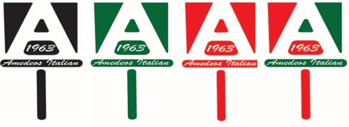

Featured Projects
View selected projects below. More information can be found at behance.net/jessecannon
Amedeos Italian Resturaunt Logo Redesign
This is a redesign of Amedeos Itlaian Resturaunt. I made this logo using Photoshop and Illustrator. I made the logo to look like a pizza pie pusher that one would use to pull the pie out of the oven, since they are known for thier pizza.
